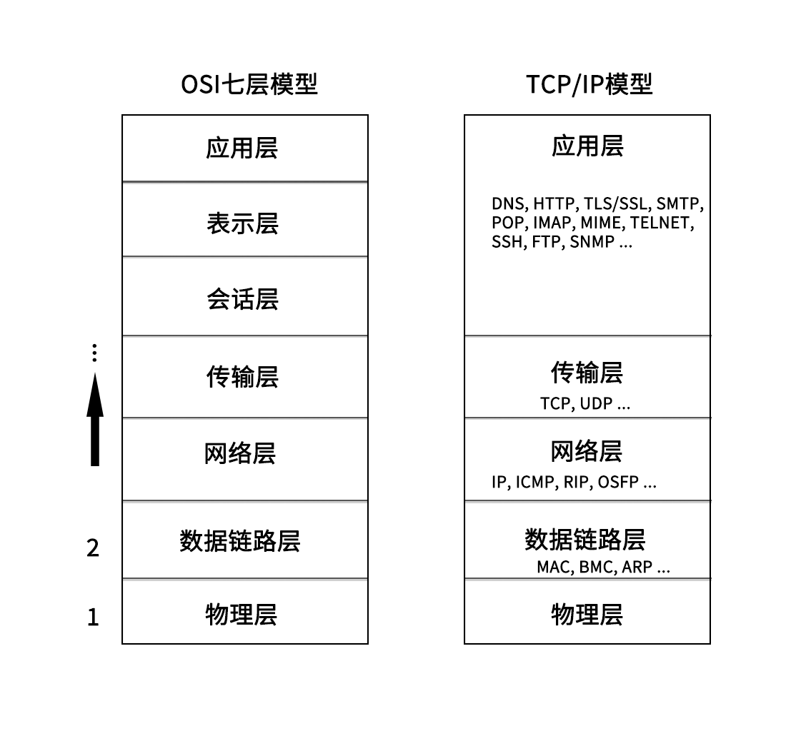
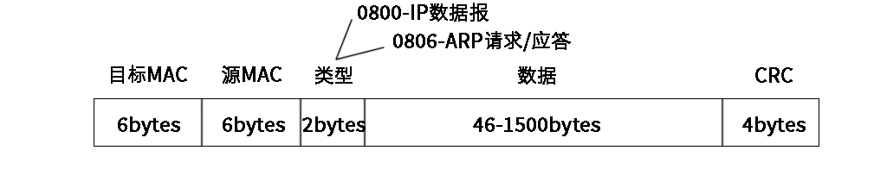
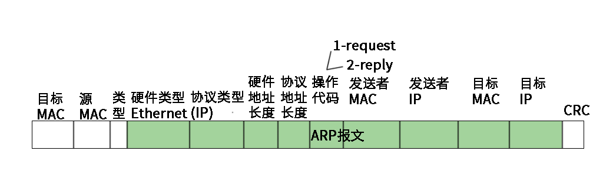
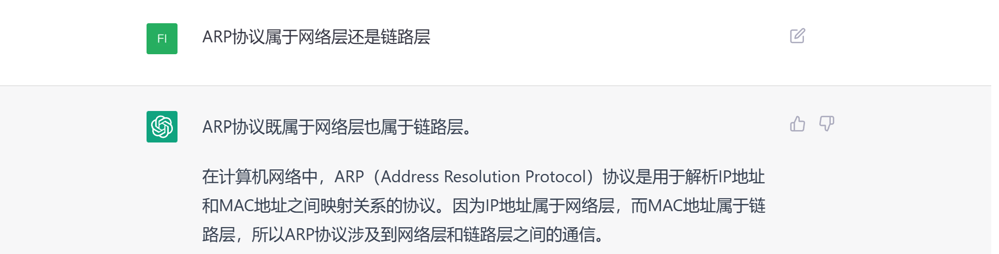
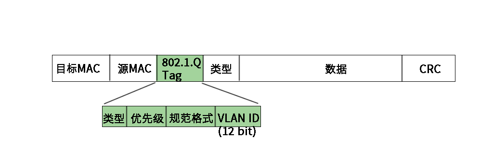
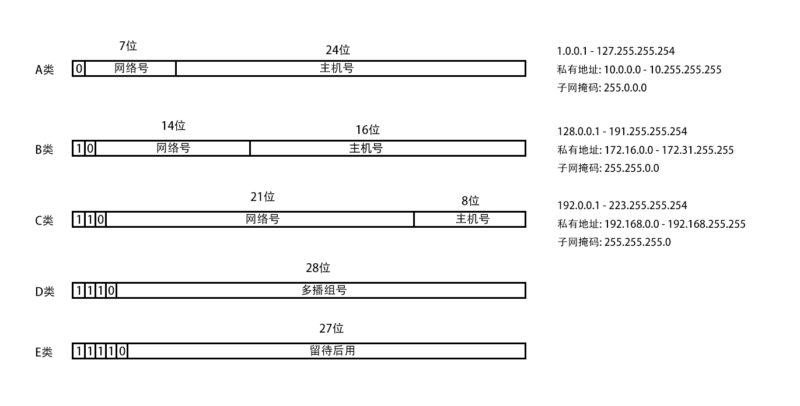

计算机网络
1. 网络分层
- OSI七层模型, OSI即Open System Interconnection, 开放系统互连.
- OSI七层模型在落地实现时, 会话层和表示层实现不了, 它即复杂有不实用, 所以OSI七层模型从来没有真正实现过. 实际中使用的都是TCP/IP模型
如图所示:

这里以一次http请求为例, 简单介绍一下:
- 首先, 浏览器遵照HTTP协议生成http消息, 交给L4(传输层)
- http消息在传输层采用的是TCP协议, 会对数据进行一些处理, 加上TCP头, 并且会控制进行三次握手/四次挥手等;
- TCP消息交给L3(网络层). 网络层会加上IP头, 即源ip和目的ip等;
- 然后交给L2(数据链路层), 这里有ARP和MAC等的参与, 会对消息加上MAC头;
- 然后交给L1(物理层), 变成电磁波发送出去.
网络上的包都是完整的, 可以有下层没上层, 绝对不可能有上层没下层.
2. 物理层
物理层不就是网线啥的硬件设备嘛, 有啥好说的呢? 有:
- 1-3,2-6交叉接法: 水晶头的第 1、2 和第 3、6 脚，它们分别起着收、发信号的作用。将一端的 1 号和 3 号线、2 号和 6 号线互换一下位置，就能够在物理层实现一端发送的信号，另一端能收到;
- 集线器(Hub): 可以将多台电脑连接起来, 集线器没有程序, 就是一个简单的将线连接起来, 它接收到的每一个字节都会广播到其他端口上去.
3. 数据链路层
3.1 MAC
MAC全称Medium Access Control, 即媒体访问控制.
MAC有以下需要注意的点:
- 标记发送方和接收方: mac头上记录了目标MAC和源MAC
- 多路访问(谁先发谁后发): 信道划分, 轮流协议, 随机接入协议;
- 数据错误校验: 通过mac包最后的CRC(循环冗余检测)校验整个包在发送过程中是否出现错误.

CRC, 循环冗余检测, 使用XOR异或算法, 检查在网络上传输数据是否出错.
3.2 ARP
ARP协议是: 根据IP地址获取该设备的MAC地址. 当明确接收方的IP地址后, 通过广播的方式, 询问局域网中的其他设备, "IP:xxx的MAC地址是多少?", 广播出去之后, 谁的IP是报文中的IP, 谁就回答. 此外并不是每次发送数据, 都需要先进行ARP请求, 机器会将ARP缓存在本地.
ARP协议包示意图如下:

发送请求时, 广播的目标mac是: ff:ff:ff:ff:ff:ff
ARP到底属于网络层协议还是数据链路层是有争议的

3.3 交换机
一个局域网中, 如果有多台主机设备, 如果通过集线器进行数据转发会有问题. 每一个数据包都广播到其他线路上去, 让主机判断目的mac地址是不是自己的, 导致而不是自己的就丢弃, 这样资源浪费. 这时就需要一种设备, 这个设备可以通过mac地址确定应该转发到哪个线路的端口上去, 这个设备就是交换机.
- 交换机是一个二层设备.
- 交换机最初并不知道目标mac在哪一个端口上, 依旧会将包转发到所有其他端口, 但是它知道数据包是从哪来的, 也就是知道源mac在哪个端口, 一点点它就记录了所有mac所在的端口, 这样就可以通过mac转发到指定的端口上去了, 而不需要转发到所有端口.
- 交换机上的学习结果称为转发表, 转发表是有过期时间的.
显然, 交换机是在一个局域网中使用的.
传统交换机是二层交换机, 实际上也是有三层交换机的. 三层交换机是在二层交换机的基础上，增加了路由选择功能的网络设备, 可以跨vlan进行数据通信等. 在路由转发上, 速度要比路由器快.
当一个局域网中存在多台交换机时, 就会出现环路问题, 从而导致环路风暴. 解决环路问题的方法叫STP(Spanning Tree Protocol), 利用最小生成树算法, 破坏环路, 化"图"为"树".
现在STP使用的很少了, 而是通过别的方式来解决环路风暴了.
3.4 VLAN
VLAN(Virtual Local Area Network), 虚拟局域网. 本来二层交换机只能构建单一的广播域, 但是使用了VLAN功能后, 可以将单一的物理网络进行逻辑分段, 分割成多个广播域. 不同的广播域之间是不存在直接的通信的.
跨VLAN通信需要使用路由器
支持VLAN需要对二层的MAC包进行调整, 添加tag:

拆分成多个广播域的好处:
- 避免了广播包在整个网络中传播, 提升网络的性能;
- 信息隔离, 保证信息安全, 防止信息泄露;
- 等等...
交换机的端口:
- Access:
- 收: 交换机接收到数据后, 先判断是否带VLAN tag;
- 有且与配置的PVID一致则接收;
- 有, 但是与端口的PVID不同则丢弃;
- 没有, 则打上该端口已配置的PVID(发送时不会剥离);
- 发:
- 收到的数据包的VLAN ID与端口的PVID相同, 则剥离VLAN ID, 变成普通数据包发送出去;
- 收到的数据包的VLAN ID与端口的PVID不同, 丢弃;
- 收到的数据包没有VLAN ID, 打上PVID, 发送出去;
- Trunk: 允许不同VLAN tag的数据包通过, 一般用于交换机之间;
- 收:
- VLAN TAG在trunk允许列表内的接收;
- 没有VLAN TAG的, 接收, 打上PVID(发送时不会剥离);
- 不在允许列表内的丢弃;
- 发:
- VLAN TAG与PVID相同, 则剥离VLAN ID后发送;
- VLAN TAG与PVID不同, 但是在允许列表内, 则发送;
- 否则丢弃;
- Hybrid: Access和Trunk的混合.
PVID是默认VLAN ID, 又叫native VLAN
3.5 小结
数据链路层数据传输大致流程:
- 主机A创建数据包, 源MAC地址填自己sss, 目标MAC地址填接收端;
- 如果不知道接收端的MAC地址, 通过ARP协议获取目的MAC地址;
- 具体流程是, 通过广播的方式, 发问: "IP为xxx的主机, MAC地址是多少呀?"
- 这时, IP为xxx的主机收到消息, 就会回答"MAC地址是yyy"
- 主机A将填有源MAC和目标MAC的数据包从网口发送出去, 顺着网线, 就到达了交换机;
- 假设数据包从交换机的a口进入, 这时交换机就记住了a口连着的主机mac地址是sss;
- 交换机查看目标mac地址yyy, 然后查表, 发现yyy是b口连着的主机;
- 于是交换机将数据包从b口发送出去;
- b口另一端的B主机接收到数据包, 拆包发现MAC地址yyy正是自己的MAC地址, 所以就接收了.
上面的流程是一个局域网内的, 要是跨网络传输, 需要借助路由器, 这就属于网络层的内容了
4. 网络层
4.1 IP
- 网络号: ip地址前面的部分, 用于定位一个子网
- 主机号: ip地址后面的部分, 用于定位子网内的一个具体的主机地址
- 子网掩码: 用于区分网络号和主机号, 是一串与ip地址长度相同的数字, 其左边都是1, 右边都是0. 子网掩码为1的部分表示网络号, 为0的部分表示主机号.
传统ip地址分类

- A类, 最大网络数: 126(2^7-2), 单个网段最大主机数: 16777214
- B类, 最大网络数: 16384(2^14), 单个网段最大主机数: 65534
- C类: 最大网络数: 2097152(2^21), 单个网段最大主机数: 254
- 特殊的ip
- ip地址的主机号全是0, 表示整个子网; 例如: 192.168.12.0/255.255.255.0
- ip地址的主机号全是1, 表示广播地址. 例如: 192.168.12.255/255.255.255.0
- 0.0.0.0表示当前主机
- 255.255.255.255是当前子网的广播地址
- ip地址不能以127开头, 127.0.0.1 - 127.255.255.255用于回路测试
- 私有IP
- 允许组织内部自行进行分配的ip, 不同的局域网IP可以重复, 局域网内唯一
- 10.0.0.0 - 10.255.255.255
- 172.16.0.0 - 172.31.255.255
- 192.168.0.0 - 192.168.255.255
- 公网IP
- 由组织统一分配, 需要购买
- 每一个公网IP都是全球范围内唯一的
无类型域间路由(CIDR)
- A,B,C,D,E类IP地址的子网掩码都是固定的, 这导致无法灵活控制主机数和网络数的规模, 从而导致存在一个网段内的IP冗余或者不足, 于是有了CIDR
- CIDR消除了传统A类, B类, C类地址以及子网划分的概念, 从而更加有效的分配IPv4地址空间
- CIDR形式是这样的: 192.168.1.0/26, 将IP地址一分为二, 前面26位是网络号, 后面6位是主机号
- CIDR已经成为现代网络中的标准，而传统的网络类别已经不再使用.
IP是具有定位能力的, 通过网络号和主机号, 可以标记一个主机的位置, MAC不具有定位能力, 类似身份证号, 具有唯一性
IP头:

4.2 IP查看与分配
- windows下, 查看IP地址, 使用:
ipconfig
- linux下
- 查看IP地址, 使用:
ifconfig或者ip addr/ip a
- 设置IP地址:
- net-tools:
ifconfig eth1 10.0.0.1/24ifconfig eth1 up
- iproute2:
ip addr add 10.0.0.1/24 dev eth1ip link set up eth1
- IP不是随意配置的, 如果配置了不属于当前网段的IP, 会导致网络不通
- 如果同一网段之间的两个IP通信, 可以直接发送数据, 不经过网关
- 如果不通网段之间的IP通信, 需要经过网关, 网关地址需要和当前主机的至少一个网卡属于同一网段
- DHCP(动态主机配置协议, Dynamic Host Configuration Protocol)
- 主机通过DHCP自动获取IP地址
- 工作原理
- DHCP Discover: 使用0.0.0.0作为源IP, 255.255.255.255作为目的IP, 传输层使用UDP协议, 发送广播包, (目的MAC: ff:ff:ff:ff:ff:ff);
- DHCP Offer: 这时DHCP Server接收到消息, 从剩余IP资源中分配一个, 依旧采用广播的形式, 将这个IP广播出去, 这时, 源IP是DHCP Server的IP, 目的MAC是发起DHCP的主机的IP, 这个消息中包含的信息有: IP地址, 子网掩码, 网关, IP地址租用期等;
- 客户端主机接收到DHCP Offer消息, 这时, 如果网络中存在多个DHCP Server, 就会收到多个消息, 会选取其中一个, 然后发送确认消息, 发送确认消息时, 依旧使用0.0.0.0作为源IP, 255.255.255.255作为目的IP进行广播;
- DHCP Server收到确认消息后, 广播一个ACK应答, 至此完成DHCP.
- DHCP续租和回收: 当租期过去50%后, 提供IP地址的DHCP Server会发送消息, 客户端接收到消息后, 会更新租期.
- DHCP Server还可以用来安装操作系统, 一般用于数据中心批量进行系统安装, 涉及PXE(预启动执行环境), 具体略
4.2 ICMP
ICMP 全称 Internet Control Message Protocol, 就是互联网控制报文协议. 用于在IP网络中传递控制消息.
ICMP消息被用于许多不同的目的, 包括:
- 错误报告: 当数据包在传输过程中丢失或损坏时, ICMP会向源主机发送错误报告, 以便源主机能够采取适当的措施
- 联通性测试: ping命令就是利用ICMP协议向目标主机发送Echo请求消息，并等待目标主机返回Echo响应消息
- 路由发现: 帮助主机找到到目标主机的最佳路由
ICMP消息通常由网络设备（如路由器或防火墙）生成并发送，但也可以由主机或网络应用程序生成和发送。

ping
traceroute
4.3 网关
路由表, RIP, OSFP
2. 应用层
2.1 HTTP
2.2 DNS
2.3 TELNET
2.4 浏览器
- URL: Uniform Resource Locator(统一资源定位符)
- URI: Uniform Resource Identifier(统一资源标识符)
URL与URI的区别: URL是URI的子集. 只要可以唯一确定一个资源, 就是URI. 按照一定规则, 可以分析出一个资源的位置, 就是URL, 显然URL也可以唯一确定一个资源, 所以URL属于URI.
2.5 Socket
3. 传输层
3.1 TCP
3.2 UDP
4. 网络层
5. 数据链路层
5.1 MAC
6. 物理层